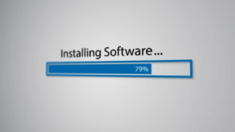

Cibersegurança 101
Dicas e orientações sobre Cibersegurança de fácil entendimento e acessíveis para todos
Easy-to-understand and accessible cybersecurity tips and guidance for everyone
Cibersegurança 101
Dicas e orientações sobre Cibersegurança de fácil entendimento e acessíveis para todos
Easy-to-understand and accessible cybersecurity tips and guidance for everyone

Tudo que fazemos em nossos computadores e celulares depende, quase sempre, do uso de aplicativos e programas. E para que possamos utilizá-los, precisamos primeiramente instalá-los. Essa instalação, na maioria das vezes, é feita através de uma fonte externa ao dispositivo. Isto é, a fonte do programa pode ser a internet - através de websites ou lojas virtuais como a Google Play e Apple Store - ou pendrives, HD externos, DVDs etc.
Almost everything we do on our computers and smartphones relies on applications and software. To use them, we first need to install them. In most cases, this installation comes from an external source—whether that's the internet (via websites or official app stores like Google Play and the Apple App Store), or external drives like USB flash drives, external hard drives, DVDs, etc.
É de suma importância que se entenda que o ato da instalação de um programa ou aplicativo mal-intencionado é um das grandes portas de entrada para infecções por códigos maliciosos que podem ser desde um simples vírus de computador (que irá apenas “bagunçar” seu equipamento), até um meio que permite que um hacker acesse e roube seus dados pessoais e bancários.
It is extremely important to understand that installing a malicious application or program is one of the main gateways for malware infections. These can range from a simple computer virus (which merely disrupts your device) to tools that allow a hacker to access and steal your personal and financial data.
Sendo assim, a maneira mais fácil e indicada de um usuário comum se proteger, ou seja, diminuir consideravelmente o risco de instalar acidentalmente um programa malicioso, seria garantir que suas fontes de programas e aplicativos são confiáveis.
Therefore, the easiest and most recommended way for an everyday user to protect themselves—significantly lowering the risk of accidentally installing malicious software—is to ensure that their software sources are trustworthy.
Quando falamos do conceito de “confiabilidade”, entramos numa celeuma em que a confiabilidade de tudo pode ser questionada em algum momento. Como, por exemplo, os casos de aplicativos maliciosos que foram descobertos na loja oficial da Google (Google Play). Posteriormente eles foram removidos, porém durante um tempo estavam disponíveis para os usuários instalarem.
When discussing "trustworthiness," we enter a debate where almost anything can be questioned at some point. For instance, there have been cases of malicious apps discovered on Google's official store (Google Play). Although they were eventually removed, they remained available for users to download for a period of time.
Contudo conseguimos delinear de forma geral as boas práticas que irão nos guiar nas escolhas mais prováveis de fontes de programas confiáveis. A seguir descreverei as boas práticas, sendo que algumas são gerais e outras específicas por sistema operacional que o usuário está utilizando.
However, we can outline general best practices to help guide us toward the safest software sources. Below, I will detail these best practices—some are general rules, while others are specific to the operating system you are using.
1) Sempre que quiser utilizar determinado programa, busque descobrir qual é a empresa que o desenvolveu. Pesquise se essa empresa tem uma boa reputação e, com essa informação em mãos, verifique em qual localização a empresa disponibiliza seu programa, seja para compra ou instalação grátis.
1) Whenever you want to use a specific program, find out which company developed it. Research whether the company has a solid reputation and verify where they officially offer the software for download or purchase.
2) Caso se trate de um programa desenvolvido por um grupo de pessoas, sem uma empresa por trás, busque identificar, através de pesquisas no Google, os detalhes do projeto, se há um website oficial, e qual é a localização em que disponibilizam o programa para download e instalação.
2) If the software was developed by an independent group without a company behind it, search online to check project details, verify if there is an official website, and confirm where the installer is officially hosted.
3) Quando se tratar de um programa pouco conhecido, ou seja, que nenhum dos seus amigos e conhecidos utilizam, pesquise em websites confiáveis reviews sobre o programa (exemplo: Tecmundo). Nestes websites, você irá descobrir se o programa é lícito, e caso seja, será indicado por onde você pode instalar o programa.
3) When dealing with unfamiliar software that none of your peers use, look for reviews on trusted tech news websites (e.g., Tecmundo). These sites can help confirm whether the software is legitimate and where to safely install it.
4) Evite programas sem um descritivo claro, minimamente em inglês. Não digo que todo programa desenvolvido por outras nacionalidades, em que o idioma oficial não é inglês, sejam maliciosos. Porém convencionou-se que o idioma oficial mundial é o inglês e isso passa credibilidade. Então, por exemplo, caso você encontre um website oferecendo um programa com todas as descrições apenas em russo, já é um sinal de alerta para desconfiar.
4) Avoid software that lacks clear descriptions, at least in English. This doesn't mean every program developed in non-English speaking regions is malicious, but English has become the international standard for software development and builds credibility. For example, if a website offers software with descriptions exclusively in Russian, that's a clear red flag.
5) Para celulares com Android (Samsung, LG, Nokia, Motorola, Xiaomi, Asus etc.), utilizar a loja oficial da Google, chamada Google Play, para instalar aplicativos.
5) On Android smartphones (Samsung, LG, Nokia, Motorola, Xiaomi, Asus, etc.), always use Google's official store, Google Play, to install apps.
6) Para celulares e computadores com iOS (Apple), utilizar a loja oficial da Apple, chamada App Store, para instalar aplicativos e programas.
6) On Apple devices (iOS/macOS), use Apple's official App Store to install apps and software.
7) Para computadores com Windows, idealmente utilizar a loja oficial da Microsoft, chamada Microsoft Store, para instalar aplicativos e programas. Entretanto cabe dizer que esta loja ainda está em desenvolvimento e alguns programas podem não estar disponíveis nela. É importante lembrar que há uma cultura dos usuários de sistemas Windows de baixar instaladores de programas diretamente de websites na internet, pois durante grande parte da existência do sistema operacional Windows não existia uma loja oficial. Nesse caso, as dicas 1 a 4, citadas anteriormente, se tornam ainda mais críticas.
7) On Windows PCs, ideally use Microsoft's official store (Microsoft Store) to install apps and programs. However, since some software may not be available there, Windows users traditionally download installers directly from websites. In such cases, tips 1 through 4 become even more critical.
8) Para computadores com Linux, utilizar o repositório ou loja oficial de programas que irá variar de acordo com a distribuição Linux sendo utilizada.
8) On Linux computers, use the official package repository or software store specific to your Linux distribution.
Vale ressaltar que mesmo quando a plataforma possui uma loja oficial (que teoricamente só contém programas lícitos) é importante estar atento. Quando, por exemplo, se tratar de um aplicativo pouco conhecido, busque sempre ler as opiniões que os outros usuários publicaram na página de instalação. Muitas vezes ali você conseguirá identificar se há algum comentário negativo que gere sinal de alerta.
It is worth noting that even on platforms with official app stores (which theoretically host only legitimate apps), you should remain cautious. For lesser-known applications, always read user reviews on the store page before installing; negative feedback often signals potential red flags.
Por fim, creio que seguindo estes passos você terá uma chance muito menor de ter problemas no seu dispositivo que sejam relacionados vírus, malwares de forma geral. Obviamente que, como foi dito no início deste artigo, sempre iremos depender em algum grau da confiabilidade de empresas e grupos de pessoas para que tenhamos mais segurança e privacidade em nossos dispositivos.
Ultimately, following these guidelines will significantly reduce the likelihood of encountering malware or viruses on your devices. Of course, as noted earlier, our digital safety and privacy will always rely to some extent on the trustworthiness of software developers and vendors.
Por Igor Buess - 03/06/2023 By Igor Buess - 03/06/2023
Voltar à página principal Back to main page
Sobre o autor e esta página About the author and this page